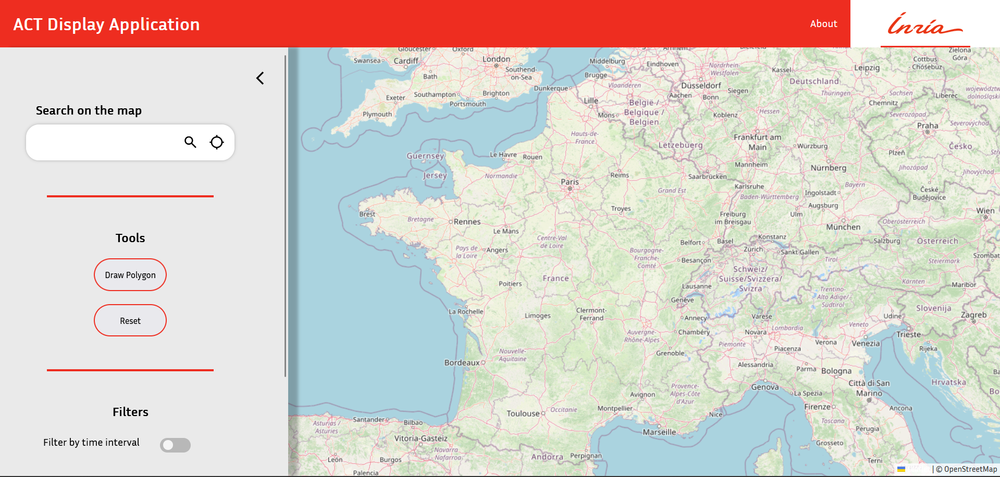

Antoine Maïstre-Rice
Étudiant en informatique
Étudiant en IUT informatique passionné par le développement, je vise la formation Polytech Nice Sophia en alternance.
Me contacter
- E-mail : antoine.maistre@etu.unice.fr
- Téléphone : 06 95 74 24 15
Mes expériences professionnelles
Stage a l’Inria de Sophia Antipolis (du 17 Avril au 16 Juin 2023)
- Technologies utilisées
- Front End ‚Üí html / css / js, OpenStreetMap (leaflet)
- Back End ‚Üí python, flask
- Déploiement → docker, portainer, gitlab pages
- Autre → Implémentation pour ce projet du standard oneM2M
- Description Durant ce stage, j’ai travaillé sur le projet ACT (Asynchronous Contact Tracing). Je partais d’une architecture existante (en backend en python et un front en Django), et ma mission était de comprendre l’architecture existante et de l’améliorer. Le backend est le même pour la partie web et la partie mobile, je me suis occupé de la partie web du site et Antoine Fadda Rodriguez, un autre stagiaire s’est occupé de la partie mobile. Nous nous sommes tous deux occupés de chercher des solutions de déploiement et de les mettre en place. Je m’occupe actuellement de la simulation des entrées des systèmes de détection de virus dans la base de donnée.
- Aperçu du site (après mes améliorations)

- Notes
- Le lien est uniquement un front et ne pourra pas accéder au serveur à moins que le client soit connecté sur le bon réseau.
- Le responsive du site est toujours en développement.
- Le repo sera mis en public une fois le stage terminé.
- Mon rapport de stage sera disponible sur ce portfolio une fois terminé.
- Technologies utilisées
{kind=link}
Mes projets
Mes projets Angular
Annuaire en ligne
- Aperçu

- Lien du repo git https://iut-git.unice.fr/gt102769/sae401_equipe1b_512bank
- Mon rôle Développer l’interface graphique du site avec Angular
- Note Le site est complet, mais n’est malheureusement pas hébergé, donc je ne peux pas fournir un lien vers le site.
- Aperçu
Mes sites internet natifs
Site d'e-commerce
- Technologies utilisées PHP, HTML / CSS / JS
- Aperçu

- Lien du repo https://github.com/ThomasGorisseGit/MerchPHP
- Mon rôle Faire des requêtes ajax au back-end PHP, Développer la fonte graphique du site.
Mes projets Logiciel
Jeu de plateau Informatisé KillBique
- Technologies utilisées java, JavaFX, FXML, SceneBuilder
- Description
La version informatisée du jeu se base sur une architecture Client - Serveur à l’aide des sockets en java. Le jeu a été programmé en respectant l’architecture MVC (Modèle, Vue, contrôleur). Il y a trois interfaces programmées : L’écran principal → l’interface du plateau de jeu Les écrans personnels → l’interface des cartes de chaque joueur L’espion, interface pour avoir accès aux cartes de chaque joueur
- Mon rôle Développer les interfaces personnelles et une grande partie de l’interface principale.
- Note Je ne peux malheureusement pas fournir un lien vers le repo git ou des images du jeu, les règles du jeu utilisées par le code et les images sont soumises à des droits d’auteur.
Jeu d’Échec informatisé
- Technologies utilisées Java, JavaFX
- Description
J’ai réalisé ce projet personnel afin d’apprendre la librairie JavaFX
- Aperçu

- Lien du repo https://github.com/Antoine-MR/javaFX-Chess/tree/main
- Note Le jeu est presque jouable, n’ont pas été implémentés les échecs au roi, le roque ainsi que la prise en passant.
Mes projets Android
Application d'e-commerce
- Technologies utilisées Android Studio, Volley (library)
- Description En groupe de 3, nous devions créer une application Android de e-shopping quasiment fonctionnelle.
- Aperçu

- Vidéo de démo https://streamable.com/1ykn9n
- Lien du repo https://github.com/itskatt/projet-android